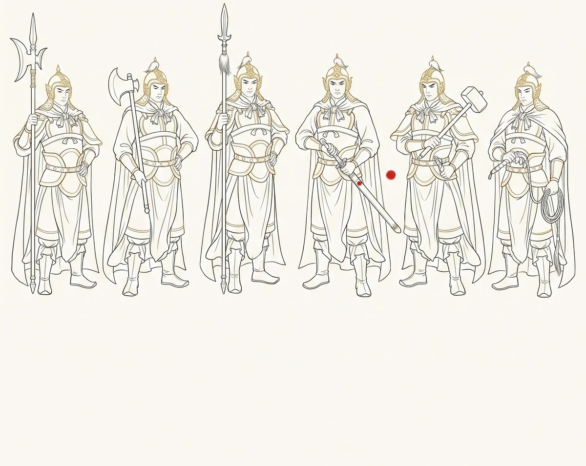

六丁六甲——取经路上最沉默的军队

轨标：个人创作 来源：主题六.txt 章节 "# 六丁六甲——取经路上最沉默的军队" 双索引链接： - 正向：CHANGELOG.md W285 段（待补） - 反向：file-index.md 本文件条目（待补） W285（git 创建提交溯源 · W424 回填） 核验状态：未核验
导语
取经路上，暗处有三十九位神祇轮值守护。四值功曹管记录，五方揭谛管守护，而六丁六甲是唯一带兵器的。
六丁六甲是天庭正规军。丁神六位，甲神六位，共十二人。职责不是记录，不是贴身守护，而是战斗。取经路上，悟空不在的时候，八戒靠不住的时候，沙僧一个人扛不住的时候，妖怪从四面八方围上来的时候——六丁六甲列阵。他们是取经工程里最后一道防线。
但他们的名字从未出现在八十一难的正式名录里，从未被任何一个取经人提起过。悟空火眼金睛看得见他们，但从来不提。八戒在暴雨中突围时，明明看到左翼的妖怪被什么东西挡了一下，但他太累了，懒得追问。玄奘在梦里见过他们——十二个身披丁甲的人站在他周围，一动不动，像一圈沉默古老的石像。天亮醒来，他以为那是梦。
不是梦。他们在。一直在。
一、十二个人，十二把兵器
六丁六甲是天庭兵部从各军团抽调的精英。每一个丁甲在成为丁甲之前，都曾是天庭军中的普通士兵，经过无数战功和同袍战死而自己幸存之后，被选拔进丁甲序列。丁神六位：丁卯、丁巳、丁未、丁酉、丁亥、丁丑。甲神六位：甲子、甲戌、甲申、甲午、甲辰、甲寅。十二个名字带着地支，十二个人的命运和十二个时辰绑在一起。
兵器是军械——天庭兵部统一配发的制式装备，在天河水兵工厂用陨铁千锤百炼，淬火的水是天河弱水。十二把兵器，十二种形态，十二种战法。
丁卯是六丁里最年轻的，兵器是一对子午钺，双持短刃，刃口内弧，专破妖雾。每次挥完钺，刃上沾一层妖雾残渣，他在溪水里洗净，用袖子擦干。丁卯是唯一会在战斗后唱歌的人——极轻极低地用鼻子哼天河水军的老军歌，歌词忘了一大半，只记得最后一句：“天河的水往东流，当兵的人不回头。”
丁巳的兵器是一条锁链，链尾带锥的流星球。他负责清除暗哨。出手前观察很久——暗哨换岗规律，妖怪探子打哈欠时露出的牙口磨损程度可以推断年龄，指尖在锥尖上轻敲，计算风向、风速、出手弧线。然后出手，无声。妖怪探子从树干上滑下来，落在苔藓上，没有一丝声响。每次清除完暗哨，他会在那棵树上用锥尖刻一道极细的痕——不是计数，是标记。他说，同袍路过看到这道痕，就知道这片林子清过了，不用再冒险进去。
丁未的兵器是一面重盾，城墙级的塔盾，盾面上铸着天河星图。扎营时把盾往正前方一插，星图在月光下像把整条天河搬到地上。妖怪夜袭，第一刀永远砍在盾上，星图里的星位被刀砍中的瞬间闪一下，妖怪的刀就碎了。丁未扎营后做的第一件事不是插盾——是找到最平坦稳固的位置，用手掌把地面碎石一粒一粒拨开，再把盾极慢极稳地插进土里。甲戌问他为什么清碎石。他说，夜袭时妖怪第一刀砍在盾上，盾底石子会在震波中弹起来打中盾面星位——星位被自己的石子打中，比被妖怪的刀砍中更疼。
丁酉的兵器是一把斩马刀，长柄弧刃，刀背极厚，刀刃极薄。专门对付体型巨大的妖怪。每天卯时磨刀，甲子每天卯时点叶，两人隔着一片空地，磨刀声和点叶声在清晨天光里互相穿透。丁酉磨完刀后用手指在刃口上刮一下，放在嘴里尝——不是尝血，是尝铁。铁的味道从极腥极咸变成极淡极清，刀就磨好了。
丁亥的兵器是一把破阵锤，锤头极圆极沉。砸妖洞石门，一击碎裂。从不在同一个位置砸第二下。每次砸完门，用袖子把锤头石粉擦干净——石粉极细极白，落在溪水里顺流漂走，水面上泛起一圈极淡的涟漪。丁亥每次砸门之前，心里都会默念一句话，是老铁匠在他领锤那天说的：“锤头落下之前，想清楚——砸下去，门就没了，里面是生是死都是你的责任。”念完，锤落，门碎，转身，嘴唇动一下，没有声音，口型是：走好。
丁丑的兵器是一副极沉的镣铐，锁妖用的——锁住后法力全封，肉身不伤，等主人来领。取经路上十四年，值日功曹记过他说的话，总共三句：某月某日，曰“锁”。某月某日，曰“钥匙谁拿的”。某月某日，曰“这妖怪太臭”。但他有个秘密——每副镣铐内侧刻着一行字：“此妖锁于某月某日，锁者丁丑。期满释放，勿再犯。”释放妖怪时从不让对方看到这行字。
甲子是六甲里最老的，兵器是一把极细极长的刺剑，像缝衣针。天河水军时代的老兵，年纪大到记不清多少岁，只记得在天河上站岗时，天河水还是清的，河底鹅卵石在阳光下每一颗都看得清棱角。每天卯时在营地东边练剑——不是杀招，是点。用剑尖在树叶上点孔，叶片不落，叶柄不断，叶脉不伤，只留下一个极圆极细的孔。甲子点完叶后，把叶子放在营地中央那块大石头上。丁卯的子午钺洗完后也放那里晾，丁巳的锁链盘在旁边。甲子的叶子放在最上面，那个孔在清晨阳光下像一颗露珠。
甲戌的兵器是一把长戈，守城用的，柄极长极直，戈头极弯极利。扎营时横在正后方。妖怪冲过来时，戈头从极静的姿态中突然扫出去，在妖怪面前极近地划过，妖怪退一步，甲戌收回长戈，戈头搁回营门横木上。不追——职责是守营，不是杀妖。每次收回戈后，他会用拇指在戈杆上摸一下——那个位置是虎口磨出的极深极滑的凹痕。旧戈杆换掉时，他把旧杆断口那一截带在身边，新杆的凹痕和旧杆的断口，两种触感在指尖交替。
甲申的兵器是一对短戟，双持，左右开弓。天庭军中有名的“翻山将”——过山走山脊，双戟插岩壁，交替攀。取经路上悬崖峭壁多，悟空能翻筋斗云过去，但玄奘和行李过不去。甲申用双戟在岩壁上凿出孔洞，系绳索拉栈道。玄奘走栈道时，甲申蹲在崖顶，一手握戟，一手按岩壁，用指节轻敲，感知岩壁共振频率——如果有崩裂前兆，他会在裂缝扩大之前把玄奘拉上来。扎营时他蹲在石头上，用戟尖画明天要翻的山的剖面图。甲辰有一次说：你这地图除了你自己没人看得懂。甲申说：不需要别人看懂——明天翻山的是我。
甲午的兵器是一把长枪，枪杆昆仑铁木，枪尖天河陨铁。正面硬刚的战斗，他冲在最前面。枪尖在阳光下像正午太阳，妖怪还没看清位置，枪已刺穿护甲。冲锋前有一瞬间的静止——长枪往地上一顿，枪尖入土三分，闭眼，呼吸一口气，把所有杂念压进肺底，然后睁眼，瞳孔亮得像枪尖反射的日光，拔枪，冲锋。甲子有一次站在他旁边，甲午闭眼，甲子也闭眼。两个人的呼吸在那一瞬间同步。甲午冲出去之后，甲子的呼吸还保持着那个节奏，仿佛还站在他旁边。
甲辰的兵器是一把长戟，比甲午的枪更长，比甲戌的戈更弯，订制品。他在天河水军时被称为“孤龙将”——打仗不列阵，一个人站在阵前，长戟往地上一顿，以自身为轴旋转，戟刃划出弧光，靠近的飞行妖怪全被弹飞。扎营时他会站在营地最空旷处，把长戟竖在面前，闭眼练听力——不是耳朵，是全身。长戟在空气中感知方圆数十里内所有飞行妖怪的翅膀振动频率。丁卯有一次走得太近，子午钺被气场牵引，发出一声极轻的嗡鸣。甲辰睁开眼说：东南方向，一只鹰妖正在盘旋，它翅膀振动频率乱了——它也感应到我了。
甲寅的兵器是一把战斧，斧刃极宽极利，斧背极厚极沉。他的斧法不是劈，是震——斧刃砍进护甲，斧背在接触瞬间释放冲击波，从内部震碎。每次打完仗，斧面上嵌满碎片——铁片、骨片、鳞片、角质层，他把碎片抠下来，在石头上按大小排好。值日功曹问他排这些干什么。他说，数。功曹说，数什么。他说，数今天砍了几个。甲寅的右手虎口上全是疤——握斧握的。最老的疤磨成了极亮极滑的角质层。甲子有一次把剑鞘内壁的底衬割下来一块，贴在他虎口上。那片底衬薄得像被月光浸透的天鹅绒。甲寅下次握斧时，斧柄磨的不再是自己的疤——是甲子的剑鞘。
二、列阵
六丁六甲的战斗方式是列阵。十二个人，十二把兵器，十二个位置。阵型固定，但变化无穷。
某夜，山坳扎营，三面峭壁，唯一出口朝东。子时，妖雾从东边涌入，雾中是妖骑兵，数量数百。值日功曹站在云头上正欲示警，六丁六甲已列完阵。
甲子刺剑最先穿入雾中，刺穿妖骑兵先锋的心脏。丁卯的子午钺劈开妖雾，雾散后妖骑兵暴露在月光下。丁巳的锁链无声缠上后方旗手的手臂，旗手被拽离马背，旗帜倒下，阵脚大乱。
妖骑兵冲到谷口，枪尖刺向营地。丁未的塔盾就在那里——枪尖刺中盾面星图，星位骤亮，枪尖碎裂。甲戌的长戈从盾侧横扫，三个骑兵被扫下马。丁酉的斩马刀切入前排马腿关节，甲寅的战斧震碎后排护甲。甲午的长枪从丁未和甲戌之间穿出，一枪贯穿队长胸甲。甲申的双戟攀上谷口石壁，从上方打散后队。甲辰的长戟在夜空中划出弧光，一只俯冲的鹰妖被斩断翅膀。丁亥的破阵锤砸向谷口石壁上的暗门——石壁碎裂，妖骑兵后援被切断。
战斗持续不到半个时辰。取经人没醒——甲辰在玄奘翻身时用长戟杆轻轻按住他肩膀，玄奘重新沉入睡梦。悟空在树杈上睁了一下眼，火眼金睛闪了一下，看到谷口正在撤退的阵型，翻了个身继续睡。
三、空位
六丁六甲十二人的编制是固定的。但有一个位置是空的——丁亥。不是现在的丁亥，是老亥。
老亥殉于取经前夜。天河尽头混沌裂缝突然撕裂，虚空妖涌出，六丁六甲第一批赶到。老亥的破阵锤是唯一能震合裂缝的兵器，但必须在裂缝最核心处砸下那一锤。十一个人列锥形阵，把他送进裂缝深处。他举起锤，虚空妖咬穿他的肩膀、缠断他的腰、拖折他的膝盖。但他把锤子举得极稳，然后锤落。裂缝收缩，一切被吸回去，包括他。
甲子的刺剑在裂缝完全闭合前穿入最后的缝隙，剑尖触到了老亥的手。老亥的手指极轻极短地按了一下剑尖。然后裂缝闭合。甲子收剑，剑尖上沾着极细微的星尘——老亥的手指在混沌中燃烧后留下的唯一遗物。甲子把星尘放进剑穗上的玉珠里。那颗玉珠是老亥从家乡带来分给十二个人的——十二颗珠子串在一起，能拼出老亥家乡夜空中最远那几颗星连成的星图。
兵部要补新丁亥。甲子说不用补。他把刺剑拔出来，剑尖朝天。丁卯把子午钺架在剑身上，丁巳的锁链绕在剑柄上，丁未的塔盾放在中间，丁酉的斩马刀搁在盾缘，丁丑的镣铐压在刀背，甲戌的长戈横在盾后，甲申的双戟插在盾侧，甲午的长枪顿入土中，甲辰的长戟竖在盾后，甲寅的战斧架在枪戟之间。十一把兵器在塔盾上组成了一个阵，互相嵌合，互相支撑。阵成之后，所有兵器发出极低沉的共振。甲子说：十二个。兵部的人看着这个兵器列成的阵，沉默了很久。编制保留，新丁亥补入——但阵型里永远空一个位置，位主老亥，永不填补。
新丁亥接过破阵锤。锤柄上有老亥虎口磨出的茧痕，极深极滑。他把自己的虎口嵌进那道茧痕里，每天擦锤时用袖子轻轻擦过那圈痕迹——他知道自己永远填补不了那个空位，但他每天用自己的虎口去碰老亥留下的茧痕，像两颗挨在一起又永远隔着一点缝隙的星辰。
四、凌云渡之后
取经人到了灵山。四值功曹调去藏经阁，五方揭谛散入三界。六丁六甲回了天庭兵部，拿到一道嘉奖令，黄绫封面，朱砂大印，内容极简极冷：“各晋一级，赏天河陨铁若干。”
他们没有回各自的军团。他们在天河边的旧营地上重新搭起帐篷——十二顶，但有一顶不亮灯。兵器架十二列，有一列永远空着。篝火旁十二块石头，有一块从来没人坐。他们回天河水兵工厂领了新陨铁，每人打了一小片薄亮的铁牌，刻上自己的名字和地支，挂在那个空兵器架上。十二片铁牌在风中轻轻撞击，发出极细碎的声响。
值日功曹已调去藏经阁，但他偶尔在夜里翻出旧簿子。翻到六丁六甲那一页时，他在页边距里补了一笔极细极小的字：“按天庭兵部调档，丁甲十二人，实到十一。空位之主，殉于取经前夜。名讳不可考。遗物散入十一人。阵型未改，空位常在。”
天河弱水极凉极清，水面上倒映十二个位置——十一个站得笔直，一个极轻极柔地空着，像水面上慢慢散开的一圈涟漪，然后水面重新平静，倒影里十二个位置全部站满，全部笔直，像从来没有少过任何一个人。